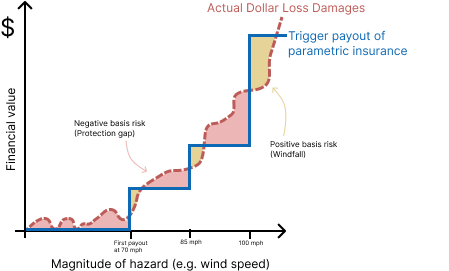
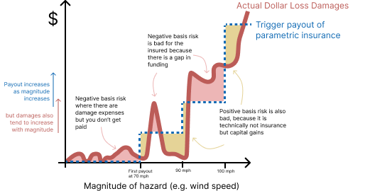

← Back to All Designs
Design
Basis Risk
Visual explanation of one of the greatest challenges with Parametric Insurance: Basis Risk
<
Overview and Design Goal
The main conclusion of parametric insurance research thus far has been the focus of reducing and explain basis risk, or the fear that a payout from insurance does not match the actual damage costs, either as too much money or too little.
Approach
I wanted to better explain this problem in short form for presentations, without basis risk being my focus. This is the visual I leveraged to do it.
My original version of the basis risk visual, which explains in more detail but incorrectly represents actual damage as something that goes up and down more dramatically than it should.